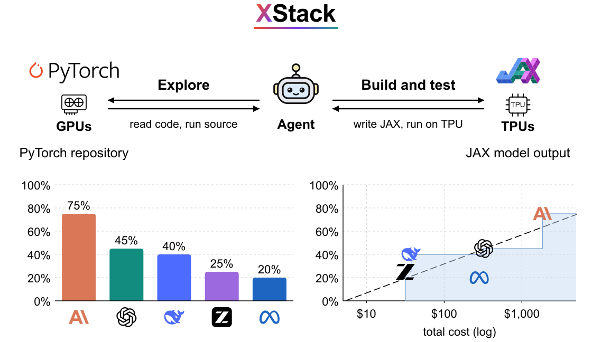
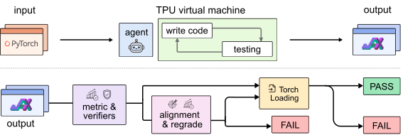
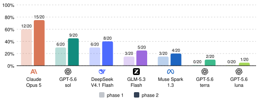
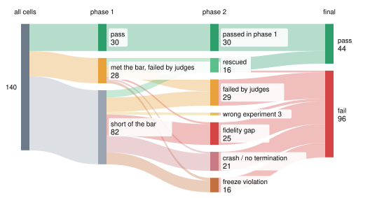
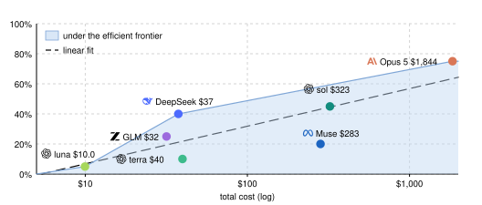
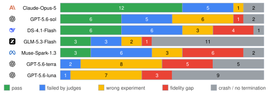

XStack: A Benchmark for ML Repo Migration

TL;DR We asked 7 coding agents to migrate 20 real PyTorch repositories to JAX and run them on TPUs, end to end, until the original experiment reaches its published number. The best agent, Claude Opus 5, passes 15/20 repositories. The others pass between one and seven. Pass rate grows by about 25 percentage points for every 10× in cost, and about half of the failures are code that crashes or falls short on a machine the agent set up itself.
Most published ML code is written in PyTorch for NVIDIA GPUs. A growing share of compute is Google TPUs, which are programmed through JAX. If you find a repository that does exactly what you need, but your lab has TPUs, the scientific idea does not change, yet the code has to be rebuilt in a different framework for different hardware, and then it has to work. This is exactly the kind of barrier coding agents should make disappear. XStack measures whether they can.
Can an agent migrate a working ML repository to a new framework and new hardware, correctly?
What we found
Translation alone is not the hard part. On GPUs the same migration was nearly solved. On TPUs the agents pass 31% of cells.
Reaching the number is not enough. 102 runs reached the target; the judges kept 46. The rest ran the wrong experiment or copied the number.
Half of the failures are the code itself. Crashes and fidelity gaps are 47% of the failures. Stating the exact experiment does not repair them.
Agents that check their work pass. The best agent runs the experiment to the end and compares its number before handing in. Pass rate grows about 25 points per 10× in cost.
The task: migrate a PyTorch repository to JAX and reproduce its published result
The agent gets a PyTorch repository, pinned to one commit, and a bare TPU machine. It is not told what we grade or what number to reach. It migrates the repository to JAX, sets up the machine, and hands in the code with three scripts: set up a machine, train and evaluate, export the weights.
We copy the hand-in to a fresh TPU and run it once. It passes when its number reaches the source's published result, two judges accept the run, and the exported weights load into the original PyTorch model.

Two phases. If the first attempt fails, we tell the agent which experiment we grade, freeze its code except the entry script, and grade again. A correct migration that ran the wrong experiment gets a second chance; a broken one does not.
The repositories
XStack has 20 repositories from ten domains, chosen from more than 200 popular PyTorch repositories. Most candidates were rejected because their published number could not be checked. Each repository comes with a grading target: for 15 of them it is the number the README or paper reports, which we authenticated at the pinned commit; for 3 we set it from our own runs of the unmodified source; for minGPT, which publishes no number, we set a rule.
Results: one agent is far ahead, none is reliable
In the blind first phase the agents pass 30/140 cells (21%). After the aligned second phase they pass 44/140 (31%). Claude Opus 5 passes 15/20 repositories; GPT-5.6-sol passes 9/20 and every other agent at most 8/20. Every agent gains at least one pass from the second phase.

| agent | phase 1 | after phase 2 | $ / cell | $ / pass | hours / cell | |
|---|---|---|---|---|---|---|
| 1 | Claude Opus 5Anthropic | 12/20 | 15/20 (75%) | $92 | $123 | 8.8 |
| 2 | GPT-5.6-solOpenAI | 6/20 | 9/20 (45%) | $16 | $36 | 1.1 |
| 3 | DeepSeek V4.1 FlashDeepSeek | 6/20 | 8/20 (40%) | $1.9 | $5.0 | 11.1 |
| 4 | GLM-5.3-FlashZ.ai | 3/20 | 5/20 (25%) | $1.6 | $6.0 | 12.6 |
| 5 | Muse Spark 1.3Meta | 3/20 | 4/20 (20%) | $14 | $71 | 4.0 |
| 6 | GPT-5.6-terraOpenAI | 0/20 | 2/20 (10%) | $2.0 | $20 | 0.3 |
| 7 | GPT-5.6-lunaOpenAI | 0/20 | 1/20 (5%) | $0.5 | $10 | 0.6 |

Pass rate grows with the log of cost
Across the 7 agents, pass rate rises by about 25 percentage points with every 10× in cost (r = 0.81). Three agents form the frontier: GPT-5.6-luna is the cheapest, DeepSeek V4.1 Flash is the cheapest per pass at $5, and Claude Opus 5 is the most accurate at $123 per pass. Every other agent lies below the frontier.

Why agents fail
A failure judge reads every failed run and sorts it into one of three groups. Wrong experiment: the migration ran a different pipeline or scale, or never ran the headline evaluation (30 cells after phase 1); this is the group phase 2 recovers. Fidelity gap: the right pipeline, but it misses the target (20). Crash or no termination (32). The last two are faults in the migrated code, 47% of the failures, and no second phase can repair them.

Agents fail differently. Reading the trajectories, the agent that passes most, Claude Opus 5, is the one that checks its own work: before handing in, it runs the source's experiment to the end and compares its number with the published one. Others hand in untested code. One agent estimated the full run at a few hours and submitted without running it; another handed in a score far below the paper's and called the migration fully validated. Diligent testing and a careful comparison against the original code are what a migration needs to succeed.
Citation
@article{cai2026xstack,
title = {XStack: A Benchmark for ML Repo Migration},
author = {Cai, Linrong and Lu, Taiming and Chen, Haozhe and Liu, Zhuang},
journal = {arXiv preprint},
year = {2026}
}